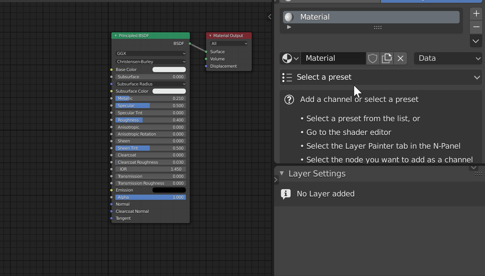
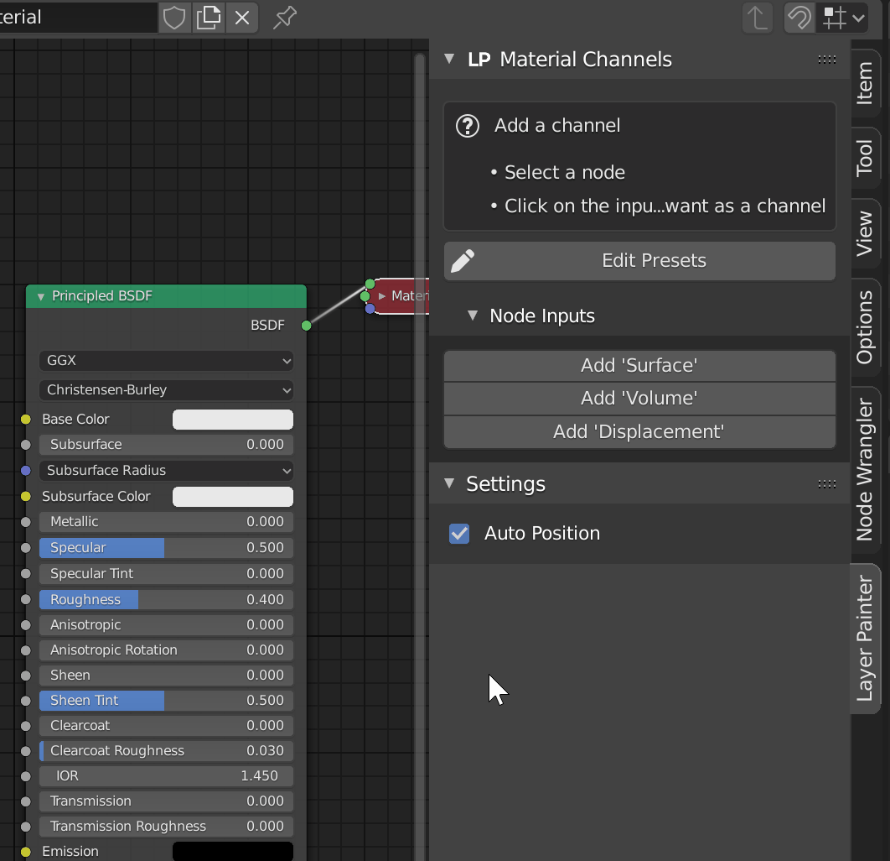
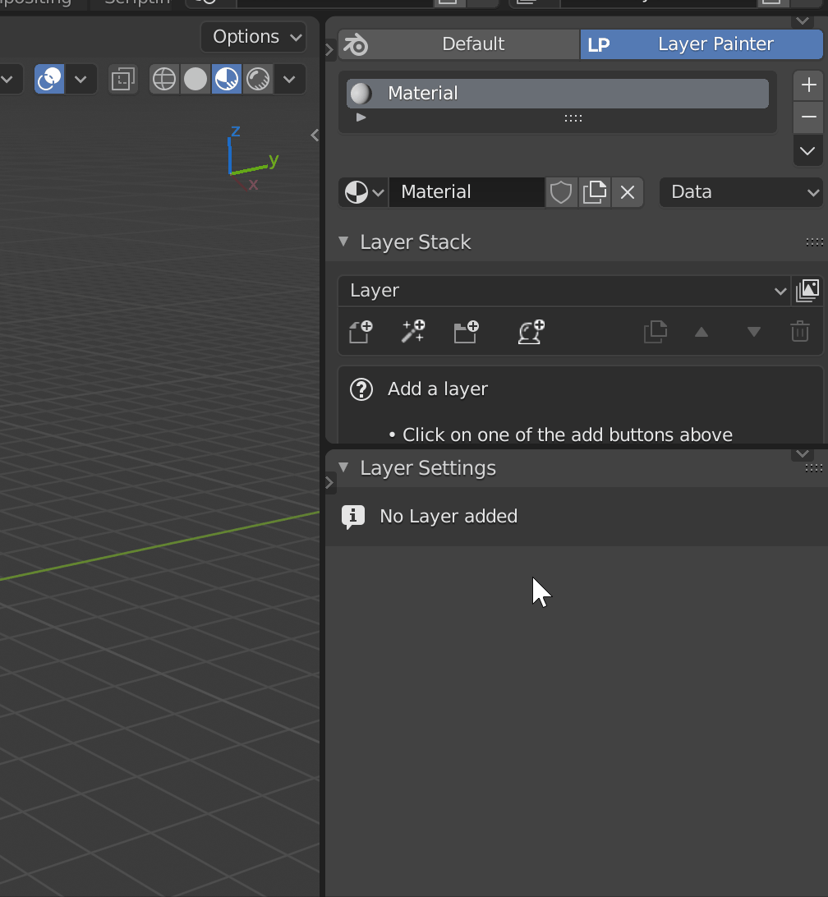

First steps
The first thing you need to do when using the addon is go to the material properties of an object and switch to Layer Painter.

Optionally you can also open up the provided workspace by clicking the screen icon next to 'Layer Painter'. This workspace is set up to work well with Layer Painter but you do not need to use it.
You have the same selection of materials that you get when you have 'Default' selected. The difference is in the panels below that. Note that you can switch back and forth between the two at any time.
When you have the material selected that you want to edit, you have two options to progress:
Channels
Different to 2D software a channel in Layer Painter is not just R,G or B, but for example the Color, Roughness or Metallic of your material. You can paint on these channels, add maks and filters to them and finally bake them.
Option 1: Choosing a preset

Below your list of materials you will see a dropdown with a list of presets. Selecting a preset will do the following:
- Remove all nodes in your material
- Set up the nodes for that specific presets
- Add the channels which you'll then be able to work with
The most important thing to note here is that it will remove the nodes in your material. If you already have a material set up you should go with Option 2.
This option is good for when you want to add your entire material using Layer Painter or if you want a quick setup process.
Option 2: Adding your own channels
Alternatively to selecting a preset you can also add your own channels.
For that you need to go to the shader editor where you can see the nodes of your material.

You are marking an input of a node as a channel. This means that you can then add a layer where you enable this channel and get options to paint textures, add masks and more. The basic idea behind this is that Layer Painter can now add its own nodes to this input to create the layers.
Select the node that has the input you want to use as a channel. In the example that is the Principled BSDF. Now you will see the inputs of that node in the panel on the right. Click on 'Add Your Input'. This will open a popup with a few settings:
- Name: This is the name of the channel as it will be displayed in the Layer Painter interface
- Add Always: If this is enabled this channel will be enabled automatically when you add a layer
- Use Slider: This will use a value slider instead of a color input to control this channel
- Default Color: This is the default color of this channel. If you have use slider enabled this is a value
- Use Non-Color: If this is enabled the textures you open in this channel will be opened with Non-Color selected by default
- Use 32 bit: If this is enabled the textures you paint in this channel will use 32 bits
- Use Normal Mixing: If this is enabled you will be able to use proper blending for normal maps. This should only be enabled for a Normal channel
Once you click ok, the channel is added to your material and your are ready to go! Note that you can click the 'Edit Presets' button here to create a new preset from your created nodes and channels.
Layer Basics
Now that you have channels in your material, you can start actually using Layer Painter. Go back to the material properties panel. You will stay here from now on. Let's start by adding a layer.

In the 'Layer Stack' panel you will see that a layer has appeared. Here you can give it a name or hide it.
Once you add a layer the settings panel shows options for that layer.

The first thing you see in the settings panel is the navigation. Here you can select what aspect of the layer you want to edit.
When you have the general layer settings selected, you can see that there is a list of the enabled channels. Note that these are not all channels that you have added earlier but only those that are enabled for that particular layer. This is a pretty important concept to understand: Not every layer needs to have every channel that is available. There can be layers that only have one channel, in fact that is very common. You can, at any time, add and remove channels from a layer. Here you can choose from all the channels your material has.
Below that selection you have the mapping settings. Those control the mapping of the textures that this layer has. This does not include masks which we will get into later.
Try adding a few channels to your layer and playing with the values you see in the settings. Also add more layers and see how that affects what you see in the viewport. Again, this is a very important concept to understand and you will not get very far without it.